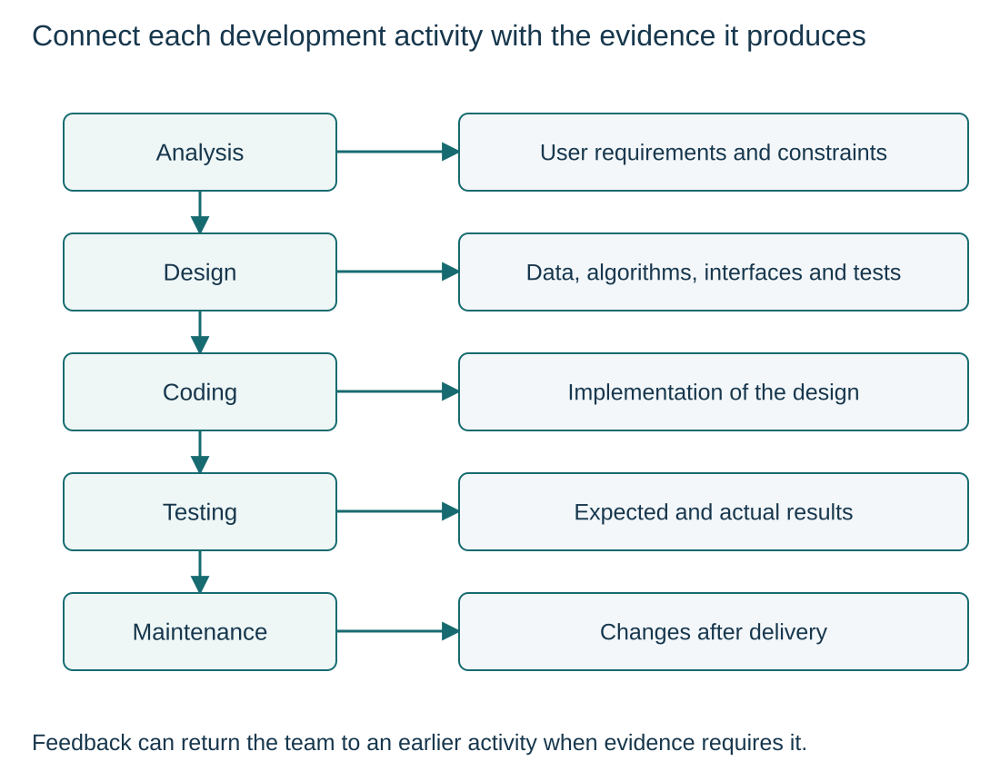

Purpose and stages of a development life cycle
Visual overview
Connect each development activity with the evidence it produces

Visual transcript
- Analysis defines requirements; design specifies the solution; coding implements it; testing compares actual with expected behaviour; maintenance changes the delivered system.
- The sequence illustrates the activities, not a rule that feedback is forbidden.
- Tests or real use can expose a need to revisit requirements, design or code.
Connect activities through their outputs
A development life cycle coordinates the work from a problem to a delivered, supported solution. Analysis establishes what is needed; design decides how to achieve it; coding implements that design; testing compares behaviour with independently expected results; maintenance responds to changes after delivery. Keeping the evidence connected helps a team find the source of a disagreement.
One booking requirement through the five stages
| Stage | Concrete result for the next activity |
|---|---|
| Analysis | Agree that Quantity is an INTEGER, 1–30 inclusive is accepted, and every other integer is rejected. Each request is independent; no seats are accumulated across requests. |
| Design | Read Quantity, evaluate both limits with AND, output Accepted or Rejected, then finish this request. Identify boundary cases before implementation. |
| Coding | Implement the complete roomRule program below with a declaration, input, both branches and ENDIF. |
| Testing | 1 and 30 must produce Accepted; 0 and 31 must produce Rejected. Compare these expectations with the chosen implementation. |
| Maintenance | A later capacity change to 35 changes the specification, comparison and expected boundary tests together. The reason for the capacity change determines the maintenance category. |
Follow feedback to the right decision
The agreed rule is the source of the expected results. If code accepts 31, testing has exposed a discrepancy; it has not changed the capacity to 31. If users actually need a larger room, analysis must establish a revised requirement before design and code change. A model organises this work but cannot replace judgement about the requirement.
Keep the example boundary explicit
The short program demonstrates one complete requirement. It assumes integer input and does not claim to validate raw text. The five-stage library example is a separate illustration of stage responsibilities, not a complete library program.
Worked example · Resolve an ambiguous request
- Request
The librarian asks for easier renewals.
- Analysis
Agree which loans qualify and what message a refused renewal needs.
- Design and coding
Specify the decision and then implement its branches.
- Testing and maintenance
Check agreed examples before release; record later policy changes separately.
A library renewal feature through five stages
| Stage | Concrete output |
|---|---|
| Analysis | Rule: a book with a waiting reservation cannot be renewed |
| Design | Decision algorithm and the reservation-status interface |
| Coding | Statements that implement the renewal decision |
| Testing | Reserved and unreserved cases with expected decisions |
| Maintenance | Changes after delivery, such as support for a new lending policy |
Worked example · Implement the agreed capacity rule
- Requirements and initial conditions
Each independent request supplies one INTEGER Quantity. Accept 1–30 inclusive; reject all other integers. No text parsing or cumulative bookings are included.
- Cambridge pseudocode
DECLARE Quantity : INTEGER INPUT Quantity IF (Quantity >= 1) AND (Quantity <= 30) THEN OUTPUT "Accepted" ELSE OUTPUT "Rejected" ENDIF - Expected result and checks
1, 15 and 30 are accepted in separate runs. 0 and 31 are rejected.
Core explanation · Exam essentials
- Connect analysis, design, coding, testing and maintenance through requirements and evidence.
- A development model organises the work; successful translation or a completed stage list does not establish suitability.